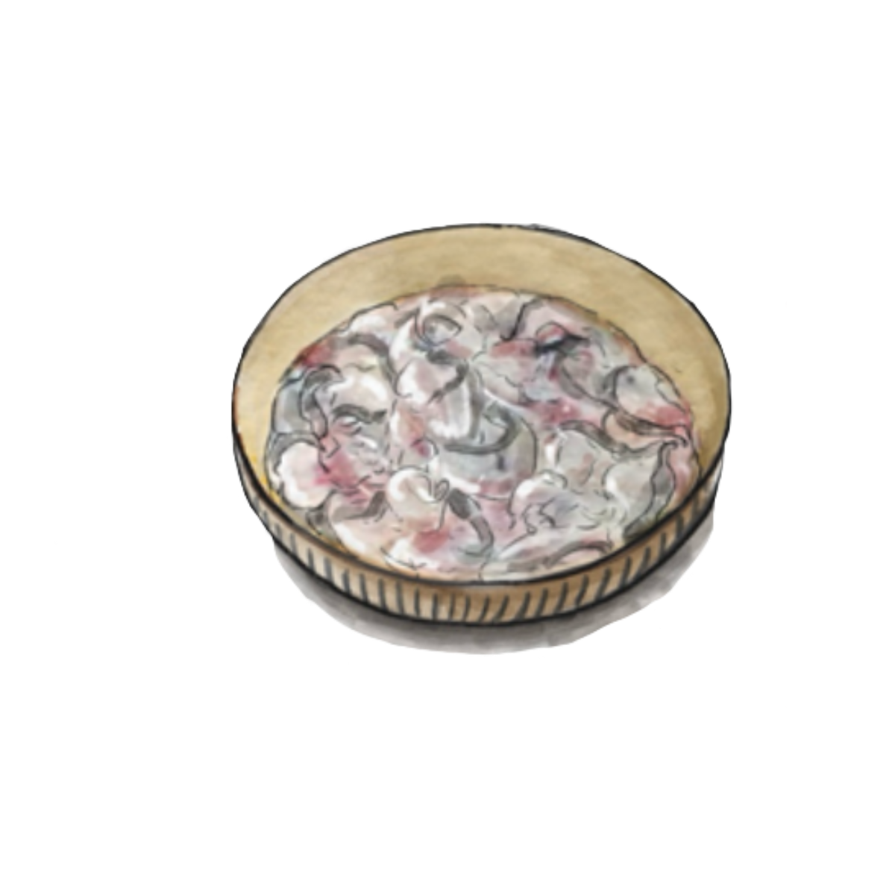
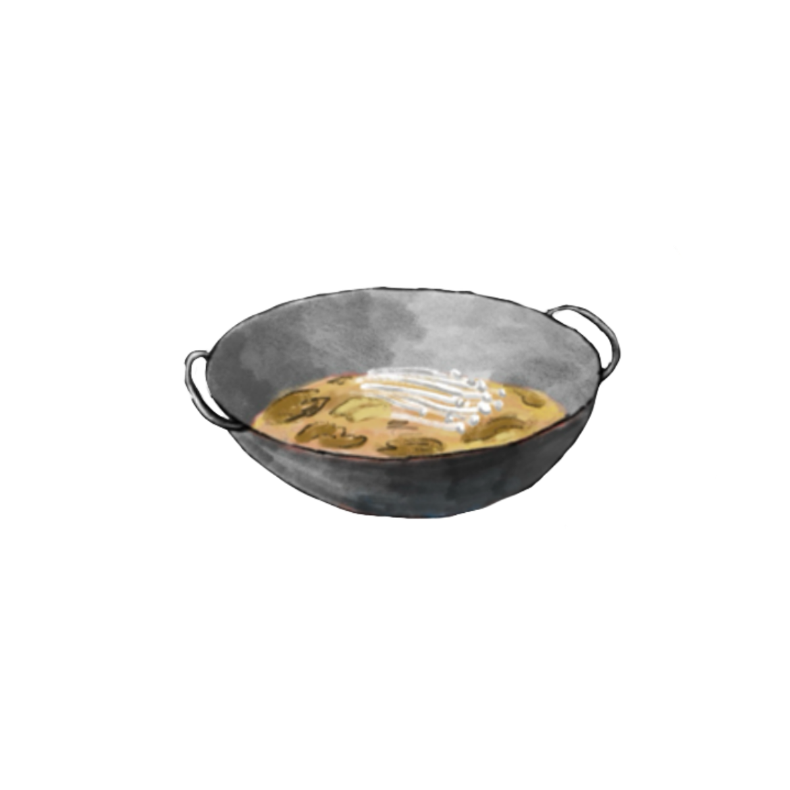
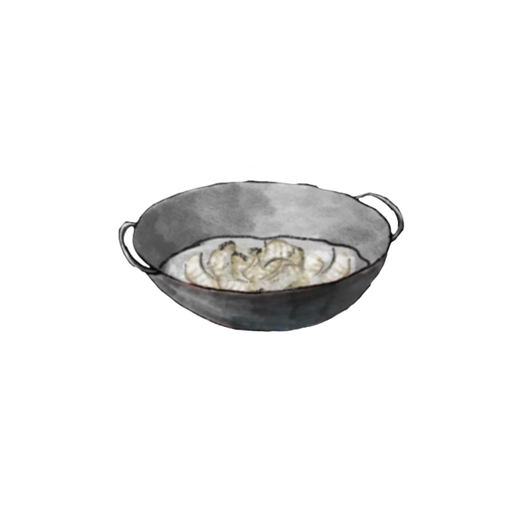
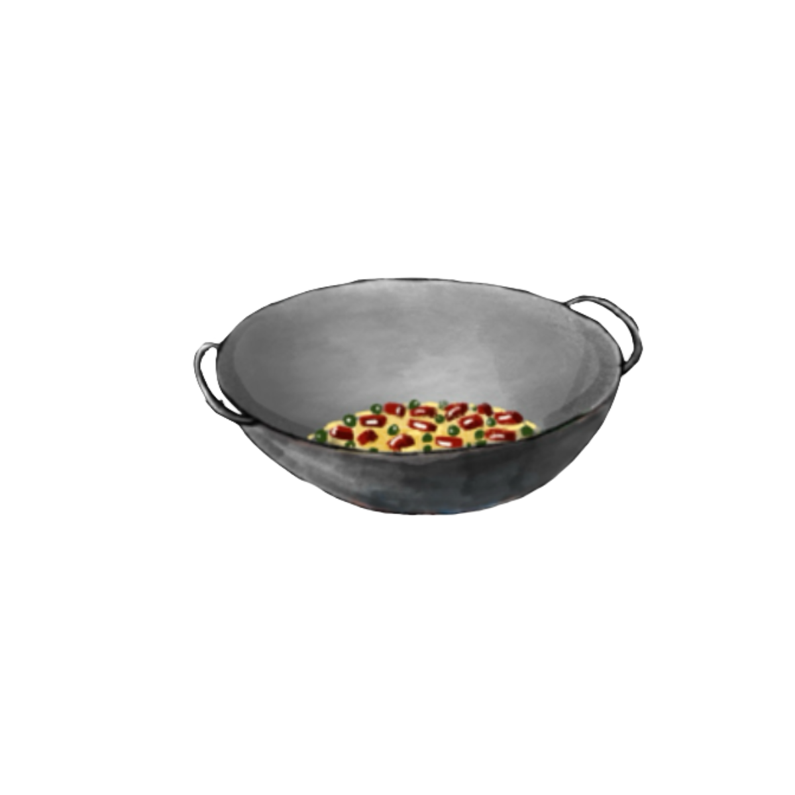

Let's get ready to cook

Step 1
Heat oil in a pan, stir-fry ginger and garlic until fragrant. Add chopped pickled chili and mustard greens, stir briefly, then add water and bring to a boil. Add enoki mushrooms, season with salt, chicken bouillon, and white vinegar. Cook through and pour into a large bowl.

Step 2
Heat oil in a pan, add ginger slices and garlic slices, and stir-fry until fragrant. Add chopped pickled chili and sliced pickled mustard greens, stir-fry briefly, then add an appropriate amount of water and bring to a boil. Add enoki mushrooms, season with salt, chicken bouillon, and a splash of white vinegar. Once fully cooked, pour everything into a large bowl.

Step 3
Bring water to a boil in a pot, add the marinated fish slices, and blanch for about a minute. Remove the fish and add them to the pickled vegetable broth.

Step 4
Top the fish with minced garlic and chopped scallions. Heat oil in a pan, stir-fry dried chili and Sichuan peppercorns until fragrant, then pour the hot oil over the garlic and scallions to release the aroma. For an extra touch, sprinkle with toasted sesame seeds if available.